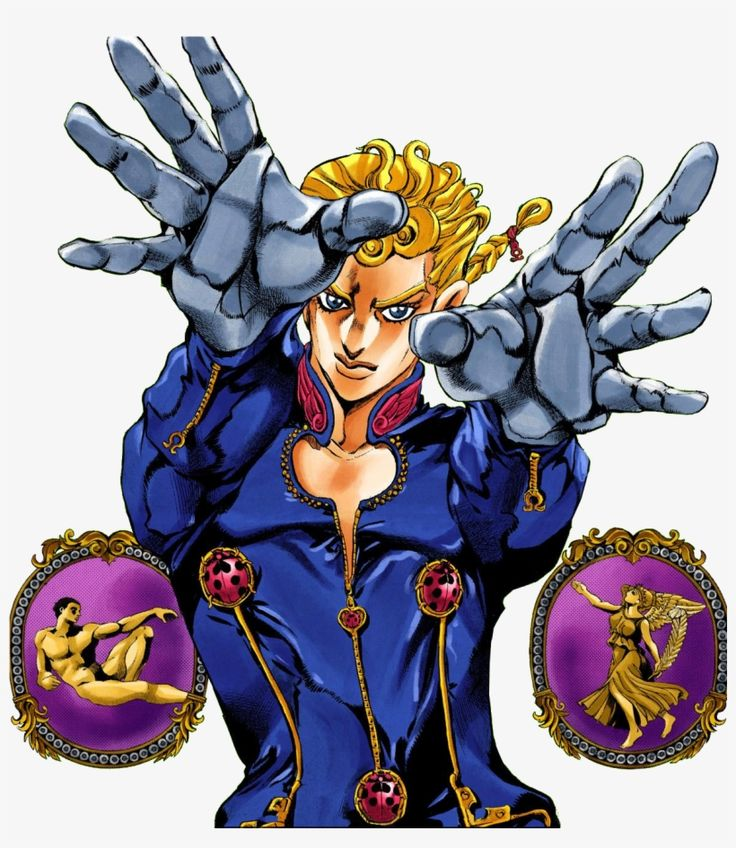
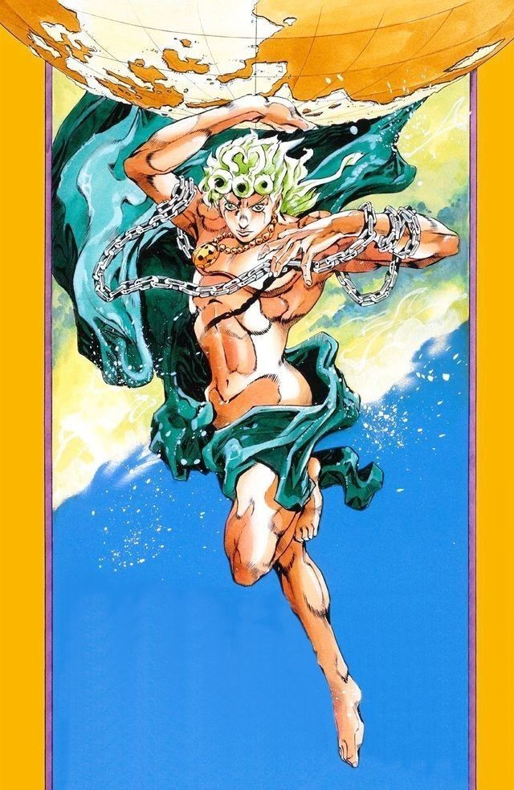
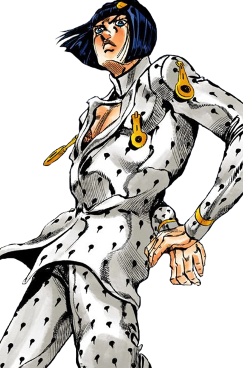

Golden Wind (Vento Aureo) is the fifth part of JoJo's bizarre adventure. It was serialized in Weekly Shonen Jump from 1995 to 1999 and adapted into a 2018 TV series by David Productions. This part follows the adventures of a young and comming mobster called Giorno Giovana and his found familly within the gang Passione. The main conflict of this part stems from the attempted assassination of the daughter of the leader of Passione and Giorno's efforts to clear the gang of its corruption.
As Giorno becomes a member of team Bucciarati they are tasked with locating Trish,daughter of the boss before she is found and assassinated by a rogue faction of Passione called La Squadra. After team Bucciarati defeats most members of La Squadra and resquests Trish from being assassinated by her father, they become traitors to their organisation and follow their lead to discover the identity of the boss. After they kill all members of the gang the Boss dispached to kill them alongside the returning Polnareff, now bound to a wheelchair due to his previous fight with the Boss, they face off against the Boss for the ownership of the Requiem Arrow.
In a brutalfight that spans the streets of Rome, Giorno ends up using the power of the Requiem Arrow to evolve his stand and obtain victory. Later in an epilogue before Giorno's arrival we withness the prophetic stand "Rolling Stone" prophesize the death of three members of the team who eventually die in persuit of Diavolo, the Boss.
The story begins with Koichi Hirose, a main character of Part 4 Diamond is Unbreakable, arriving in Naples in search of Dio's son who is revealed to be Giovana Giorgo the stand user of "Golden Experience". After an altercation with a local mobster Giorno is confronted by Bucciarati Bruno who after being defeated by Giorno reveals his distaste of Passione's drug trafficing practises to youths. Bucciarati invites Giorno to his team with Giorno accepting.He is then tested by a mobster stand user who he later kills with the help of Koichi Hirose,due to him killing an inoccent bystander.
Now a member of team Bucciarati, consisting of Bucciarati,Giorno,Mista,Abbacchio,Narancia and Fugo together they accept a mission to protect the Boss's daughter Trish, from the rogue members of Passione known as La Squadra. Along their jurney to escort Trish to the Boss located at Saint Giorgio Maggiore Island , Giorno builds a relationship with the members of his team who come to respect him in time.The team also builds a protective relationship with Trish who while at first is introduced as a spoiled and selfish grows to respect and care for her guardians.
After killing all members but the leader of La Squadra, the Bucciarati takes Trish to the boss,but is ambushed in the elevator leading to the belfry by the Boss who wants to kill Trish with his own hands. Bucciarati pursues the boss at the basement and it there when the Boss reveals his Stand "King Crimson" alongside with his ability to erase time.
Overwelmed with such power Bucciarati is critically injured before being helped by Golden Experience who gives him the chance to escape. After his escape Bucciarati announces to his team that he betrayd the Boss and urges them to help him root out the corruption in Passione. All but one of the members chose to betray the organisation and help Bucciarati, Fugo who will appear again in Purple Haze Feedback a light novel.
Now traitors the team choose to pursue the Boss's tracks to Sardina and use Abbacchio's stand "Moody Blues" to uncover the boss's identity. On their way there the team is ambushed by members of the Boss's guard. After dispaching them they board a plane to Sardine but another fight ensues that forces Trish to awaken her Stand "Spice Girl" to save the groop. Meanwhile the boss contemplates Abbacchio's powers and chooses to head to Sardine himself. There a youth called Vinegar Doppio tracks the leader of La Squadra Rissoto Nero. While tracking him Doppio mimicks calls from the Boss using random objects , where he is advised to be on alert due to Risotto observing him. Rissoto reveals himself after Doppio reacts to Aerosmith, Naranchia's stand.
A fight ensues with Doppio luring Aerosmith and using it to critically injure Rissoto before transforming into the Boss to kill him. Although injured the Boss manages to escape Bucciarati and Narancia who come to survail and Doppio disguised as a kid kills Abbacchio. The group finds Abbacchio's corpse and next to it the negative of the Boss's face. As the gand investigates the Boss's face they are found by a third party who reveals the name of the Boss, Diavolo, and calls them to find him in the Colloseum to obtain the artifact Diavolo is looking for.
Now in Rome the team kills two assassins sent by the Diavolo to slow them down while uncovering Bucciarati's undead nature being held alive only by Golden Experience's power. After killing the assassins the team takes Doppio with them unkowing of his true identity. Inside the colloseum they find that the third party helping them is Jean Pierre Polnareff, who tells the group about his past investigation of the wearabouts of Stand Arrows in Italy, leading him to fight Diavolo and be crippled by him. He then reveals the Requim stand arrow to the group but is ambushed by Doppio who skipped time and transformed into Diavolo. In a last ditch effort to prevent Diavolo from accuiring the Requiem Arrow, Polnareff stabs himself with it and awakens "Silver Chariot Requiem" a souls swapping stand that is independant from it's owner,carrying the Requiem Arrow away from the group. Confusion ensues as souls all across Rome are swapped with Diavolo taking a chance to quickly impale Giorno's body on railways, instantly killing the soul with it, Narancia's.
Diavolo now inside a gang member and the rest pursue Silver Chariot Requiem and eventually defeat it, however just before Diavolo obtains the arrow Bucciarati destroys the stand forcing all souls back into their body. With his now being completly dead his soul ascends into Heaven leaving Giorno with an emotional farewell. Now in possetion of the Requiem Arrow Giorno uses it to obtain "Golden Experience Requiem" a stand representing Fate, quickly killing Diavolo and forcing him into an endless death loop.
In the epilogue "Sleeping Slaves" Golden Wind's theme unravels as team Bucciarati faces a stand that helps people by predicting their brutal deaths and killing them beforehand in an act of mercy. Mista destroys "Rolling Stone" who predictedBucciarati's death to Diavolo's hands but unkowingly to them Fate has been altered with the stone taking the forms of Abbacchio,Narancia and Bucciarati showing how they were fated to die before their jurney even began. The part ends with Giorno as the new leader of Passione, who swears to protect the Requiem Arrow.



Comments